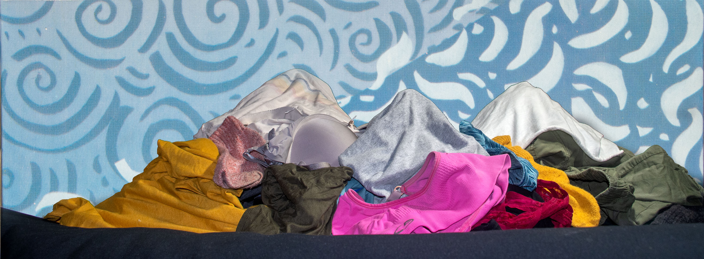

The Kingdom of Bed is a land for spirituals and dreamers. The people here tend to live simple lives in small towns where they meditate and seek peace and spiritual inspiration. These peaceful towns lie in the shadow of the great Mountains of Dirty Laundry: a towering mountain range separating Bed from the rest of BedRoom. These snowcap peaks are made of many different types of colorful rocks that create a beautiful mosaic on the horizon. Once, when people first migrated to Bed, these mountains were so small as to be nonexistent, but overtime, they’ve grown, moved by forces beyond our control and comprehension.